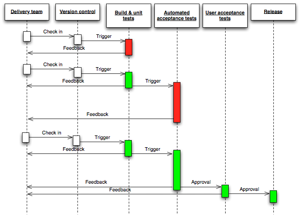

Entwicklertools
From the cradle to the grave
Ingo Pfennigstorf, 25. Februar 2014
Aus grauer Vorzeit
Workflow
Im Anfang war das Wort …
[ADWD-861] Als Benutzer möchte ich eine übersichtliche Darstellung der Stecker auf der Karte, wenn mehrere Treffer auf einem Punkt liegen
Daniel Beucke
Issue Management
Versionskontrolle
Workflow

Github
Commit Messages
- Englisch
- Jira Issue ID angeben (ADWD-902)
git commit -am "Fixed map display on mobile devices (ADWD-902)"[BUGFIX] Short summary of changes introduced by this patch
More detailed explanatory text, if necessary. Wrap it to 74 characters.
The first line is treated as the subject of the commit message and
the rest of the text as the body. The blank line separating the
subject from the body is critical (unless you omit the body entirely);
tools like rebase can get confused if you run the two together.
Help others to understand what you did (Motivation for the change?
Whats the difference to the previous version?), but keep it simple.
* Bullet points are okay, too
* An asterisk is used for the bullet, it can be preceded by a single
space. This format is rendered correctly by Forge (redmine)
* Use a hanging indent
Resolves: ADWD-902Continuous Delivery
Continuous Integration is a software development practice where members of a team integrate their work frequently, usually each person integrates at least daily - leading to multiple integrations per day. Each integration is verified by an automated build (including test) to detect integration errors as quickly as possible.
Aus grauer Vorzeit

Definierte Buildprozesse
Maven Builds
Codequalität
Sichtbarkeit
Sichtbarkeit
Jabber
- Instant Messenger
- Gruppenchat
- Jenkins Bot
- Jeder Mitarbeiter hat automatisch einen Account (GWDG)
Lokale Entwicklung
IDE
IDE
Integrated Development Environment
IDE
- Code Completion
- Code Highlighting
- Debugging
- Projektverwaltung
- Codestandards
Codestandards / Einstellungen
https://github.com/subugoe/devsettings/blob/master/ide/PhpStorm/settings.jar
Desktop Virtualisierung
Lokale Entwicklungsumgebung
- Langwieriges Setup
- Entwicklungsumgebung !== Live Umgebung
- Umgebung des Entwicklungsrechners
- Datenbankserver
- Java, PHP, Node, ... Version
- Keine einheitliche Umgebung im Team
Arbeiten mit virtuellen Maschinen
- Unabhängigkeit
- n isolierte Systeme
- Einheitliche Entwicklungs- / Testumgebung
- Betriebsnahe bis -identische Umgebung
- Schnelle und wiederholbare Inbetriebnahme
Lösungen
Vagrant
Vagrant
- Virtuelle Maschinen wiederholbar ausstatten (provisioning)
- Grundlage: Vagrantfile
- Chef, Puppet, Ansible, Shell
- VMware, VirtualBox, AWS
Vagrant Quickstart
vagrant init
vagrant upVagrantfile
# -*- mode: ruby -*-
# vi: set ft=ruby :
VAGRANTFILE_API_VERSION = "2"
Vagrant.configure(VAGRANTFILE_API_VERSION) do |config|
config.vm.box = "base"
end
Production Vagrantfile
Vagrant::Config.run do |config|
config.vm.box = "sub-base"
config.vm.box_url = "http://files.vagrantup.com/precise64.box"
config.vm.network :hostonly, "192.168.33.18"
config.vm.share_folder "v-data", "/home/vagrant/archaeo18", "."
config.vm.provision :chef_solo do |chef|
chef.cookbooks_path = "./cookbooks"
chef.add_recipe "archaeo18"
end
end
Vagrant.configure("2") do |config|
config.vm.define :archaeo18 do |archaeo18|
archaeo18.vm.provider :virtualbox do |vb|
vb.customize ["modifyvm", :id, "--memory", 1024]
end
end
end
Provisioning
execute "apt-get update"
packages = ["openjdk-7-jdk", "ant", "libjaxp1.3", "htop", "git", "vim"]
packages.each do |p|
package p
end
# make a small shell script to start archaeo18
cookbook_file "/usr/bin/archaeo18" do
source "archaeo18"
mode "0755"
end
# add archaeo18 startup to upstart
cookbook_file "/etc/init/archaeo18.conf" do
source "archaeo18.conf"
mode "0644"
end
execute "initctl reload-configuration"
execute "start archaeo18"# ---------------------------------------------------
# Install MySQL
# ---------------------------------------------------
package { "mysql-server":
ensure => present,
require => Exec['apt-get update final'],
}
service { 'mysql':
ensure => running,
hasstatus => true,
hasrestart => true,
enable => true,
require => Package["mysql-server"],
}
exec { 'mysql-root-password':
command => '/usr/bin/mysqladmin -u root password vagrant',
onlyif => '/usr/bin/mysql -u root mysql -e "show databases;"',
require => Package['mysql-server'],
}# ---------------------------------------------------
# Install Cache Servers
# ---------------------------------------------------
package { 'memcached':
ensure => installed,
require => Exec['apt-get update final'],
}
package { 'redis-server':
ensure => installed,
require => Exec['apt-get update final'],
}
# ---------------------------------------------------
# Install PHP 5.5.x with FPM
# ---------------------------------------------------
package { 'php5-fpm':
ensure => installed,
require => Exec['apt-get update final'],
}Weitere Provisioning Möglichkeiten
Vagrant up!
Toolbox
git flow
$ git flow feature start find-new-director_SUB-2013
$ git flow feature finish find-new-director_SUB-2013
oh-my-zsh
Frontend Werkzeuge
- CSS Präprozessoren
- Sass / Compass
- JavaScript Generatoren
- CoffeeScript
- Dart
Frontend Werkzeuge
- Build Tools
- Grunt / Yeoman
Frontend Werkzeuge
- Abhängigkeitsmanagement
- Bower
- npm
- rubygems
Integration vons Ganze
Build Pipeline
In der IDE
Fragen?
Kontakt
pfennigstorf@sub.uni-goettingen.de
ipfenni1@jabber.gwdg.de